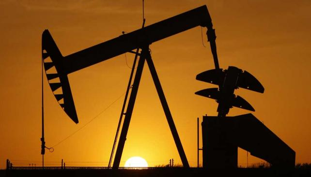

internacional
internacional 
El petróleo cerró el jueves en baja en Nueva York en medio de vagas esperanzas de un posible acuerdo para reducir la abundante oferta.
El barril del "light sweet crude" (WTI) para marzo perdió 56 centavos y quedó a 31,72 dólares, con lo cual resignó parte de lo ganado el miércoles.
En el mercado de Londres el barril de Brent para abril bajó 58 centavos a 34,46 dólares.
Los precios habían subido abruptamente el miércoles por el debilitamiento del dólar y especulaciones por un potencial acuerdo entre productores para reducir la producción.
Este jueves el dólar siguió bajando pero "la situación sigue siendo débil", comentó Gene McGillian, de la consultora Tradition Energy.
"Para que realmente se sostenga un alza, pienso que se necesitan algunos cambios en la situación general o que surja alguna señal de que los temores por las condiciones económicas son infundados", dijo McGillian. "Y actualmente no estoy convencido de que veamos algo de eso", añadió.
Los stocks estadounidenses de crudo están sus niveles más altos en décadas y una posible negociación entre Rusia y la Opep para bajar la producción solo sostuvieron intermitentemente los precios.
Seis países de la Opep y Rusia, junto con Omán, dijeron que asistirían a una reunión de emergencia para hablar de la producción, dijo Austin Sapp, analista de Schneider Electric.
